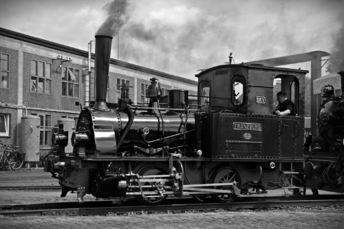

Soda Springs Idaho
Weather Summary
Currently:
Temperature:
Wind Chill:
Humidity:
Wind Speed:
Temperature:
Wind Chill:
Humidity:
Wind Speed:
°F
%
mph
5 Day Forecast
| ° | ° | ° | ° | ° |
Upcoming Events
The Dinkey Engine
Source: City of Soda Springs
This miniature locomotive played an integral part in the history of Caribou County. When the dam for Alexander Reservoir was built in 1924, it hauled supplies to the dam. Trapped by rising water, the locomotive was abandoned. In 1976 the reservoir was drained for repairs, uncovering the locomotive. It was restored by Union Pacific Railroad, and presented to the City of Soda Springs.
Contact Information

It's Idaho Weather Home Office
365 Windy WayPreston ID, 83456
208-523-5643
itsidahoweather@gmail.com